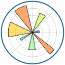
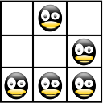

|
Label Correction Algorithm |
Recent Posts all posts
|  |
Matplotlib |

|
Statistik - Klausur |
|  |
Autofill Phishing |

|
Paper List |

|
R - A language |

|
How to typeset chess games with LaTeX |

|
This Blog - Technical Stuff |
How to use arXiv data |

|
Learning Machine Learning |